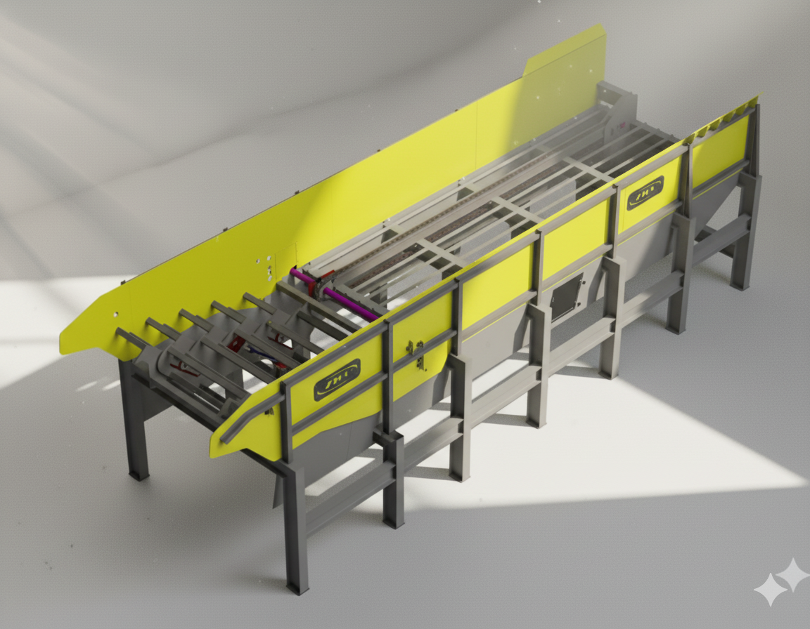
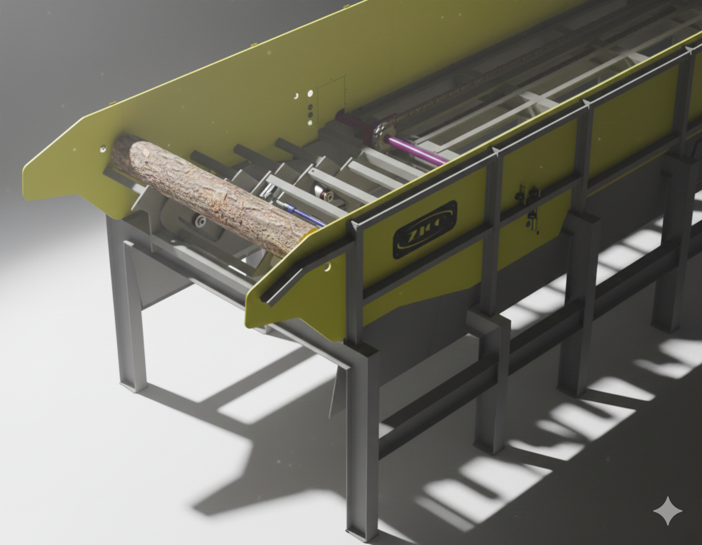
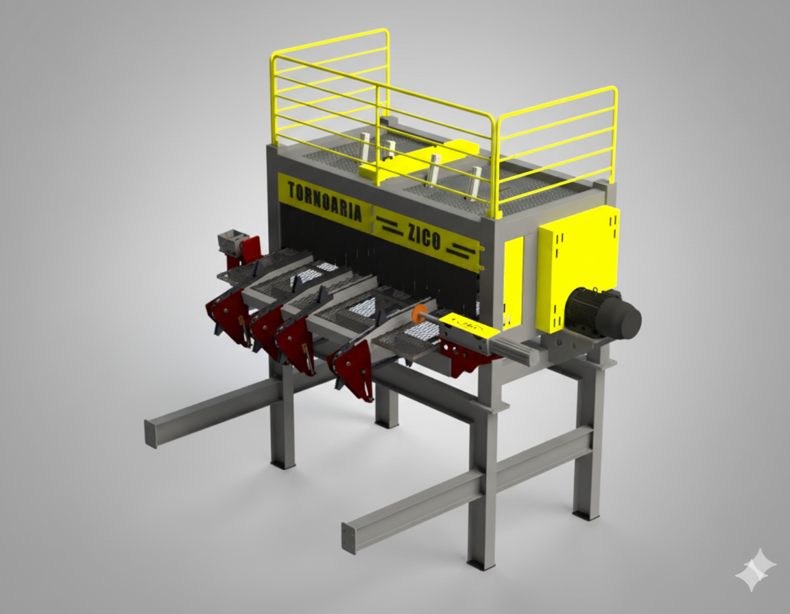
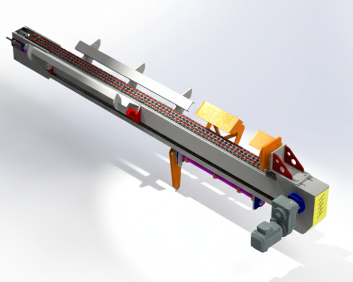
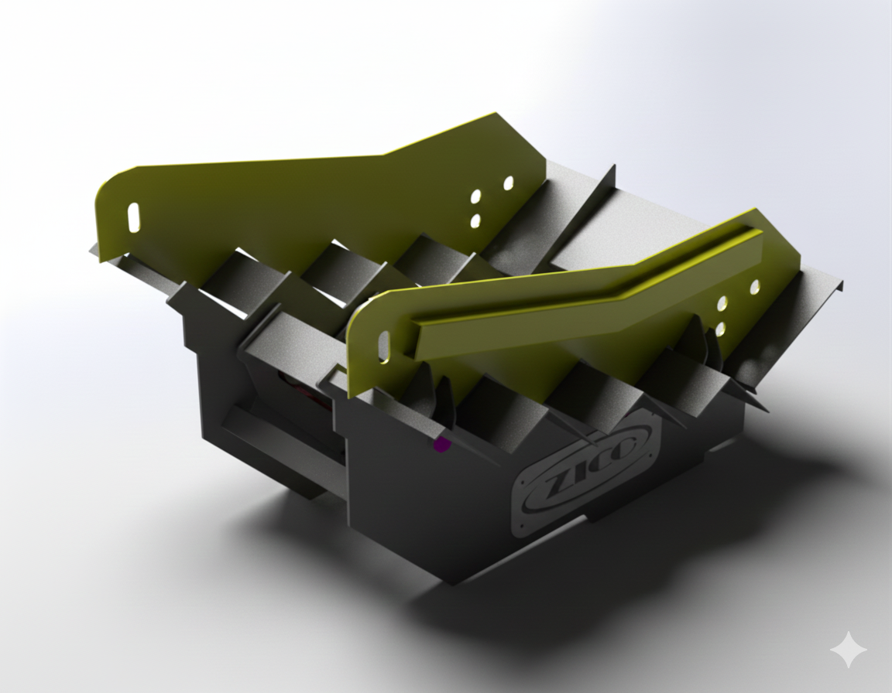
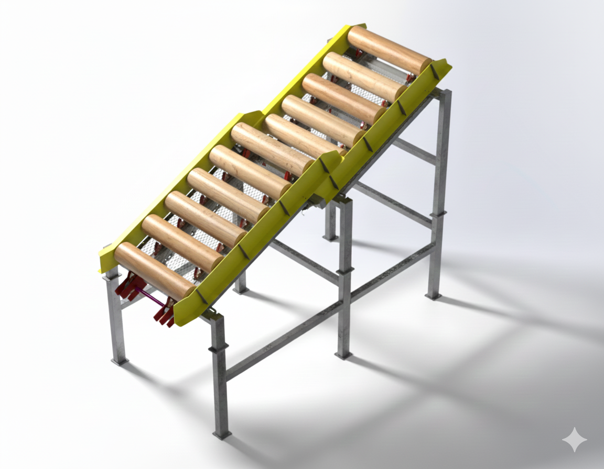
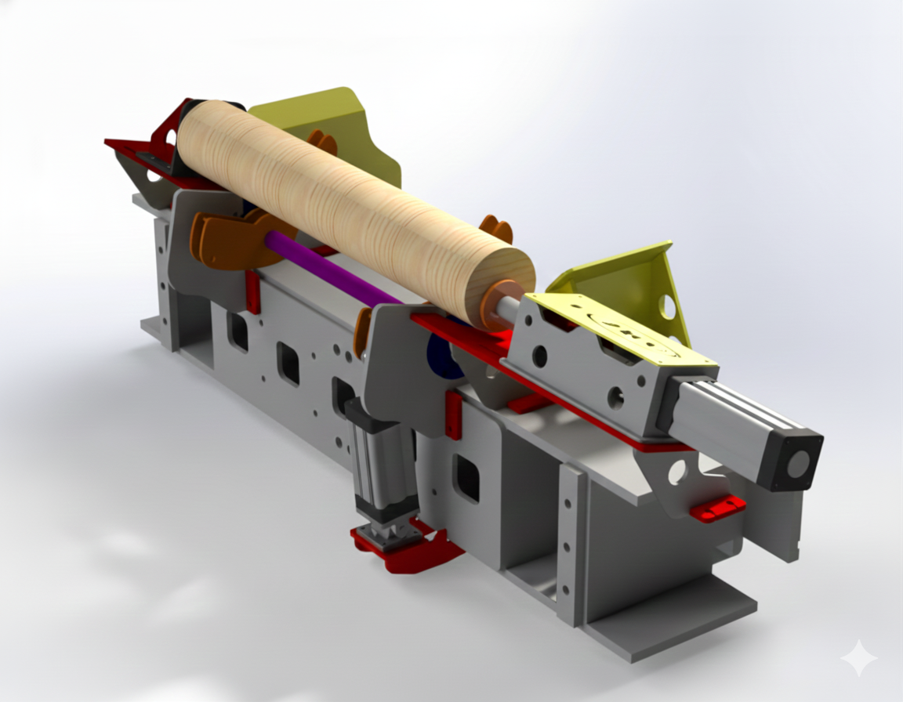
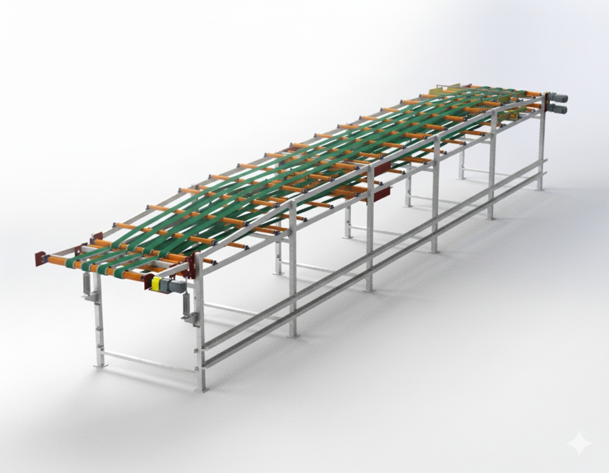
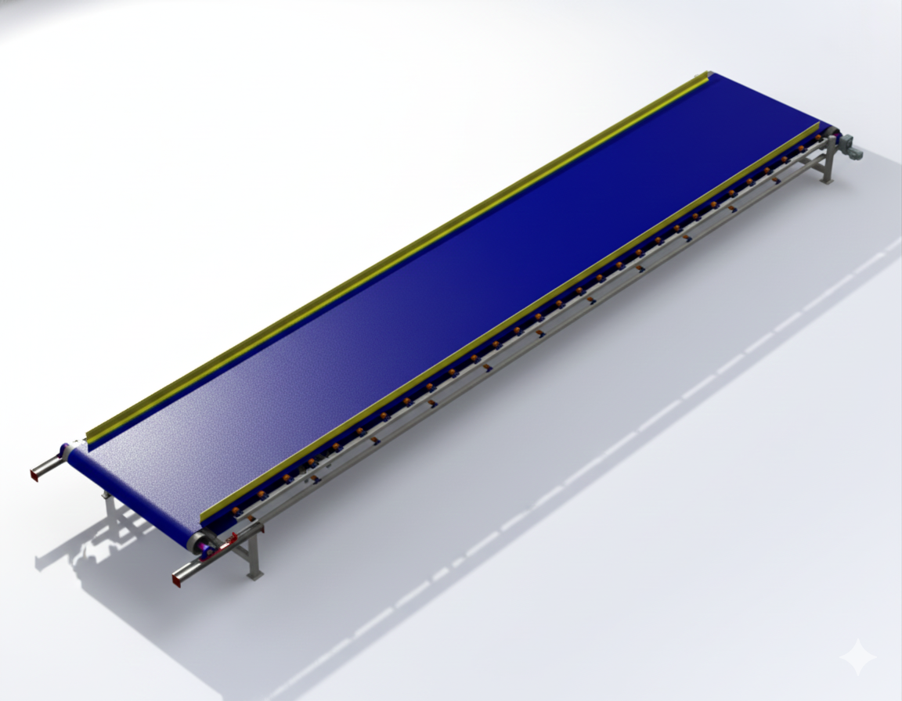
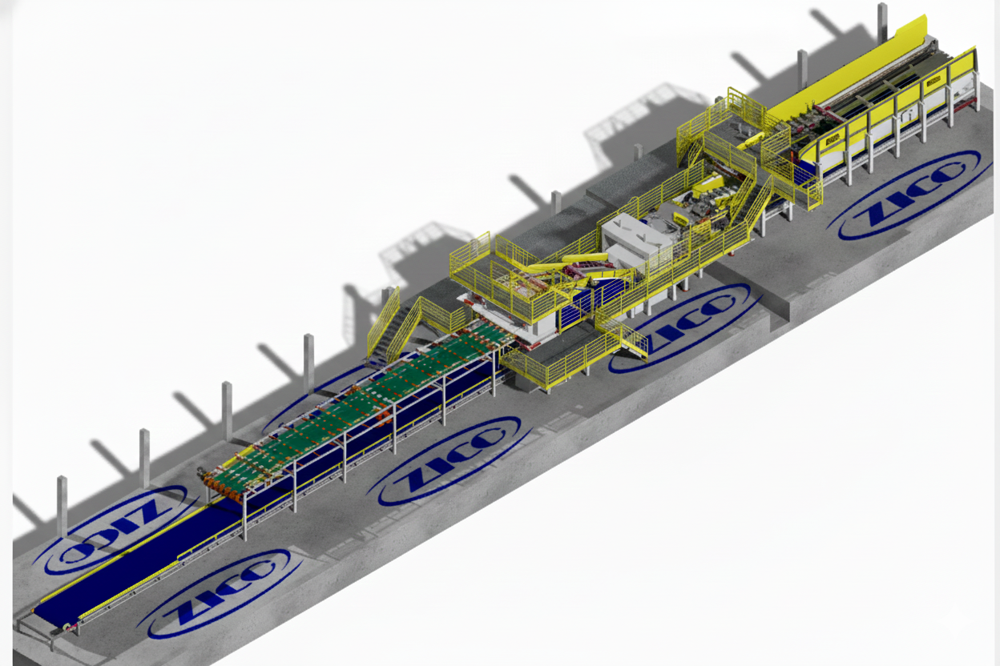

Da tora bruta à lâmina pronta: fluxo contínuo, corte que aproveita cada centímetro e máquinas que aguentam o turno mais pesado.
9 equipamentos em sintonia, na ordem real do processo. Passe o mouse nos cards e chame no WhatsApp para levar para sua fábrica.

zoom_inPrimeira da linha: recebe toras em grande volume e funciona como pulmão de entrada, alimentando o unitizador só quando precisa. A serra nunca fica esperando madeira.

zoom_inPega o volume da esteira e entrega UMA tora por vez para a Serra Log Split, com espaçamento certo. Protege a serra contra entupimento e mantém a cadência.

zoom_inA estrela da linha: divide a tora em duas metades no sentido longitudinal, eliminando tortuosidade logo no início e aumentando o aproveitamento em todo o resto do processo.

zoom_inApós o corte, posiciona cada metade com batente amortecido e tomba pneumaticamente para o Stepfeeder 1.4. Sem empilhadeira, sem braço, sem parada.

zoom_inRecebe as meias-toras cortadas e unitiza em fila única e espaçada para alimentar o Arredondador. Guias laterais ajustáveis abraçam cada diâmetro sem travar.

zoom_inÚltima esteira antes do torno: acumula como pulmão e corrige o ângulo da tora com tração dupla independente — um lado anda, o outro segura, e ela entra a 90° no torno.

zoom_inNo topo da esteira pulmão, empurra a tora contra o batente de referência e alinha o eixo exato de laminação com o centro do torno. É aqui que nasce a lâmina perfeita.

zoom_inTransporta em alta velocidade a FOLHA laminada do torno até a guilhotina em dois níveis. Enquanto uma tora termina num deck, a próxima já entra no outro — fluxo sem intervalo.

zoom_inO tapetão sob a linha recolhe cascas, galhos e terra e manda direto para o picador. No retorno pós-guilhotina, você ainda recupera miolo bom para reuso no compensado.
Projeto nacional testado em serraria de verdade: poeira, turno dobrado e cobrança por produção.

Chame a Tornoaria ZICO e receba proposta da Linha Tornado 1.4 completa ou por módulos.